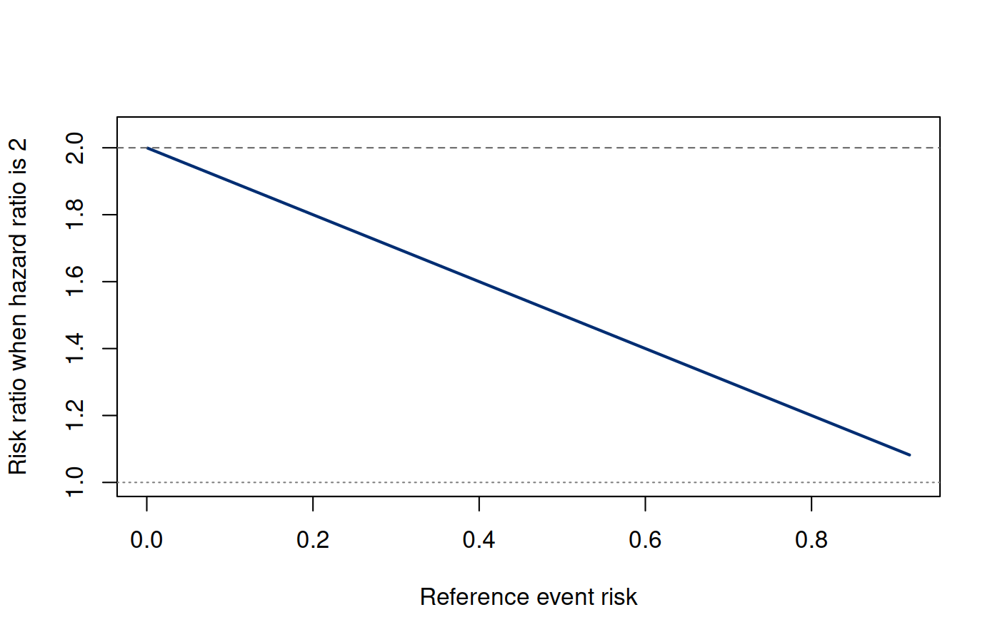
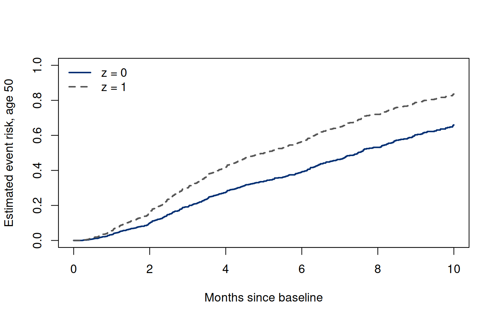

Chapter 7. The Cox model: estimation and absolute risk
7.1 Keep the contrast, relax the baseline shape
The Weibull model in Chapter 6 made two distinct claims: a specific baseline hazard shape and constant hazard ratios across time. The Cox model retains the second claim while leaving the baseline hazard unspecified. This allows covariate comparisons without selecting an exponential, Weibull, or lognormal event-time distribution. It does not make the analysis assumption-free, and it does not turn relative hazards into absolute probabilities.
For fixed baseline covariates , posit (7.1) Here and are -component columns, with baseline predictors and no intercept coordinate. The coefficients are on the log-hazard scale, consistent with the mapping in (6.6). The baseline refers to , so centering covariates gives that profile scientific meaning. The model has no separately identifiable intercept: multiplying by a constant and subtracting its logarithm from an intercept leaves every individual hazard unchanged.
Our first derivation assumes independent subjects, fixed baseline covariates, conditional independent right censoring, a correctly specified PH relationship, and distinct observed event times. Subjects enter at the common time origin. Adequate event information and variation in covariates within risk sets are needed to estimate coefficients. The next chapter develops ties and stratification. Delayed entry or changing covariate histories require corresponding risk-set definitions beyond this initial calculation. The target contrast is associational unless an additional causal design argument is supplied.
7.2 Condition on which person has the event
At an observed event time , let denote the person who fails and the risk set immediately before that event. Over a small time interval, person has event probability approximately . Conditional on one person in that risk set experiencing the event, the relative chance that it is is (7.2) The common baseline and the infinitesimal interval cancel. This is a local conditional event-identity argument, not a positive unconditional probability that a continuous event occurs at one exact time. Predictable risk sets and the event-hazard assumptions support the corresponding sequential partial likelihood construction.
Multiply these event contributions: (7.3) Censored people enter denominators while observable and event-free. They do not supply event numerators. It would therefore be wrong to say that partial likelihood ignores censored people or to delete them before forming risk sets. It would also be wrong to treat event-time factors as independent ordinary multinomial samples: later risk sets depend on earlier observation history. Partial-likelihood theory handles this sequential structure.
If we multiply all observed times by one positive constant, their order and risk sets stay the same; and its coefficient estimate stay unchanged. By contrast, absolute survival at a numerical time requires the time scale and baseline event information. This distinction foreshadows why estimation of relative hazards can proceed before estimation of absolute risk.
7.3 The score compares events with weighted risk sets
Define the risk-set weighted mean and covariance (7.4, 7.5) Differentiating the log partial likelihood gives (7.6) For predictors, is a -component column and is a by information matrix. Each event compares the failing person’s covariates with their weighted risk-set expectation. The information sums covariate variation in those comparisons. An event with only one person left at risk contributes neither coefficient score nor coefficient information. A large participant count with little within-risk-set variation can still estimate a contrast poorly.
The covariance expression follows directly from differentiating the normalized weights. For coordinates , This is the entry of . For any vector , is a weighted variance of and is nonnegative. The Hessian therefore records precisely which covariate contrasts the observed risk sets can distinguish.
The log partial likelihood is concave because is positive semidefinite. Strict identification requires enough independent covariate contrasts, and existence of a finite maximizer is another issue. If events consistently occur on only one side of the covariate comparisons, coefficients may move toward infinity while the likelihood approaches its supremum. A software warning about convergence may therefore reflect a data-information problem, not a request for more iterations. An inverse-information variance is a large-sample model-based approximation when a regular finite fit exists.
At with one binary covariate, is the observed fraction of group 1 in the risk set. Its score is the number of group-1 events minus the sum of expected group-1 events. This is the untied log-rank comparison. The Cox model generalizes that risk-set comparison to covariate-adjusted estimation and weighted expectations. It does not convert a log-rank rejection into a verified PH assumption.
7.4 From follow-up records to a hazard ratio
7.4.1 From first principles
The weighted comparisons above can be followed one record at a time. For this hand calculation, we introduce a separate six-person synthetic cohort followed from enrollment until the first recorded infection. It is not a subset of the 600-person regression cohort or the twelve-person recurrence cohort. Here the clock is measured in days, and every event-time denominator can be inspected.
| Person | Follow-up (days) | Recorded outcome | Group |
|---|---|---|---|
| A | 2 | Infection | 1 |
| B | 3 | Right censored | 0 |
| C | 4 | Infection | 1 |
| D | 5 | Right censored | 0 |
| E | 6 | Infection | 0 |
| F | 8 | Right censored | 1 |
For a censored person, the record establishes infection-free follow-up through the stated time; their later infection time is unknown. Both groups contain three people at enrollment. With one binary covariate, the model in (7.1) is . The baseline describes group 0, and is the group-1-to-group-0 hazard ratio. We assume independent subjects, a common hazard ratio over time, and independent infection and censoring times conditional on group. The six records alone cannot establish these assumptions.
At each infection time, the risk set contains everyone whose follow-up has not yet ended. Censored participants contribute to earlier risk sets and leave when their follow-up ends.
| Day | Event person | People at risk | Group 0 | Group 1 | |
|---|---|---|---|---|---|
| 2 | A | A, B, C, D, E, F | 3 | 3 | |
| 4 | C | C, D, E, F | 2 | 2 | |
| 6 | E | E, F | 1 | 1 |
For example, B contributes to the day-2 comparison but leaves before day 4. Censoring supplies no event numerator at day 3, yet it changes the next event-time denominator.
There are no tied infections. Applying (7.3) gives The first two infections occur in group 1 and the third in group 0. Taking logarithms and differentiating gives (7.7) Setting gives , hence The positive information makes the log partial likelihood strictly concave. The score decreases from 2 to as goes from to , so this is the unique finite maximum. At zero, and : a Newton step moves upward, in the direction indicated by the score. At the maximum, , its inverse is , and . The model-based standard-error approximation is . Three infections provide little information about a population effect; an exact arithmetic solution does not remove sampling uncertainty.
Under the fitted model, group 1 has twice the instantaneous infection rate of group 0 at the same time among people still infection-free. This is a hazard contrast, not a twofold infection probability. To obtain a survival probability, we also need the baseline cumulative hazard.
By day 5, only the infections at days 2 and 4 have occurred. Adding reciprocal risk-set weights, as formalized in (7.8), gives The fitted survival probabilities are Subtracting each fitted survival probability from one gives the fitted probability of infection by day 5 after enrollment for that group. The horizon, baseline cumulative hazard, and group coefficient all enter this calculation. These are plug-in probabilities under the stated model and observation assumptions; they do not say which particular person will experience an infection.
7.4.2 Standard R workflow
The complete block below defines the cohort, constructs the risk
sets, and computes the score, information and baseline directly. It then
fits the same model with survival::coxph and
survival::basehaz. Dependencies: base R and
survival; no input file is required.
ties="breslow" makes the event-tie convention explicit,
although there are no tied events here. centered=FALSE
requests the baseline at
,
matching the calculation above. The package uses numerical convergence
criteria; the first route solves the score to its stated tolerance.
Their agreement checks the calculations, not the proportional-hazards or
censoring assumptions.
Run the complete R example
Dependencies: base R, survival. This complete block includes the data, setup and calculations. Run it in a fresh R session. Short code excerpts above explain individual steps; this block supplies their shared setup. Figures and tables are written to a temporary directory.
Complete R example
# Complete R example. Synthetic data; no external files are required.
biomedical.cohort <- function(n, seed) {
old.seed <- if (exists(".Random.seed", envir=.GlobalEnv)) get(".Random.seed", envir=.GlobalEnv) else NULL
on.exit(if (is.null(old.seed)) {if (exists(".Random.seed", envir=.GlobalEnv)) rm(".Random.seed",envir=.GlobalEnv)} else assign(".Random.seed",old.seed,envir=.GlobalEnv))
set.seed(seed)
z <- rbinom(n,1,.45); age <- runif(n,35,70); age10 <- (age-50)/10
eta <- log(9)-.35*z-.20*age10
event.time <- exp(eta)*(-log(runif(n)))^(1/1.6)
censor.time <- pmin(rexp(n,.035),10)
data.frame(id=seq_len(n),z=z,age=age,age10=age10,
time=pmin(event.time,censor.time),status=as.integer(event.time<=censor.time),
event.time=event.time,censor.time=censor.time)
}
local({
previous.directory <- getwd()
example.directory <- tempfile("biomedical-example-")
dir.create(example.directory)
setwd(example.directory)
on.exit(setwd(previous.directory))
dir.create("generated",showWarnings=FALSE)
# partial likelihood, baseline hazard, and supported absolute risk.
# From first principles: risk sets, score, information, and baseline increments.
# Standard R workflow: survival::coxph(), basehaz(), and survfit().
options(digits=10)
library(survival)
dir.create("results",showWarnings=FALSE);dir.create("figures",showWarnings=FALSE)
# Six-person synthetic cohort: first recorded infection after enrollment.
# event=1 records infection; event=0 records right censoring.
cohort <- data.frame(
id = LETTERS[1:6],
time = c(2, 3, 4, 5, 6, 8),
event = c(1, 0, 1, 0, 1, 0),
z = c(1, 0, 1, 0, 0, 1)
)
if (!requireNamespace("survival", quietly = TRUE)) {
stop("Install the survival package with install.packages('survival').")
}
event.rows <- which(cohort$event == 1)
# Each event compares its group with everyone still at risk at that time.
risk.sets <- do.call(rbind, lapply(event.rows, function(i) {
at.risk <- cohort$time >= cohort$time[i]
data.frame(time = cohort$time[i], event.group = cohort$z[i],
n0 = sum(at.risk & cohort$z == 0),
n1 = sum(at.risk & cohort$z == 1))
}))
print(risk.sets)
# Compute the log partial likelihood, score, and observed information
# directly from the risk sets, without using the simplified formula.
cox.parts <- function(beta) {
answer <- c(loglik = 0, score = 0, information = 0)
for (i in event.rows) {
z.risk <- cohort$z[cohort$time >= cohort$time[i]]
weights <- exp(beta * z.risk)
probability <- weights / sum(weights)
weighted.mean <- sum(probability * z.risk)
answer <- answer + c(
loglik = beta * cohort$z[i] - log(sum(weights)),
score = cohort$z[i] - weighted.mean,
information = sum(probability * (z.risk - weighted.mean)^2)
)
}
answer
}
beta.hand <- uniroot(function(b) cox.parts(b)["score"],
interval = c(-5, 5), tol = 1e-12)$root
# Estimate baseline cumulative hazard through day 5, at the z=0 reference.
H0.hand <- sum(vapply(event.rows[cohort$time[event.rows] <= 5],
function(i) 1 / sum(exp(beta.hand *
cohort$z[cohort$time >= cohort$time[i]])), numeric(1)))
S.hand <- exp(-H0.hand * exp(beta.hand * c(0, 1)))
# Standard R workflow: there are no tied events in this cohort.
fit <- survival::coxph(survival::Surv(time, event) ~ z, data = cohort,
ties = "breslow",
control = survival::coxph.control(eps = 1e-10))
beta.R <- unname(stats::coef(fit)[1])
baseline <- survival::basehaz(fit, centered = FALSE)
H0.R <- tail(baseline$hazard[baseline$time <= 5], 1)
S.R <- exp(-H0.R * exp(beta.R * c(0, 1)))
comparison <- rbind(
first.principles = c(beta = beta.hand, HR = exp(beta.hand),
H0.day5 = H0.hand, S0.day5 = S.hand[1],
S1.day5 = S.hand[2]),
standard.R = c(beta = beta.R, HR = exp(beta.R),
H0.day5 = H0.R, S0.day5 = S.R[1], S1.day5 = S.R[2])
)
print(round(comparison, 6))
stopifnot(max(abs(comparison[1, ] - comparison[2, ])) < 1e-7,
abs(beta.hand - log(2)) < 1e-10,
abs(H0.hand - 5/18) < 1e-10,
abs(cox.parts(beta.hand)["loglik"] - fit$loglik[2]) < 1e-7,
abs(1 / cox.parts(beta.hand)["information"] -
stats::vcov(fit)[1, 1]) < 1e-7)
# Retain the small-cohort numerical summary alongside the recurring-cohort results.
small <- cohort
small.event.times <- cohort$time[cohort$event==1]
small.table <- data.frame(time=small.event.times,nrisk=risk.sets$n0+risk.sets$n1,
z0=risk.sets$n0,z1=risk.sets$n1,event.z=risk.sets$event.group)
small.table$jump <- 1/(small.table$z0+small.table$z1*exp(beta.hand))
small.table$H0 <- cumsum(small.table$jump)
small.table$S0 <- exp(-small.table$H0)
write.csv(small.table,"results/ch09-hand-risksets.csv",row.names=FALSE)
write.csv(data.frame(quantity=c("hand.beta","hand.hr","hand.se","hand.score0","hand.info0"),
value=c(beta.hand,exp(beta.hand),sqrt(1/cox.parts(beta.hand)["information"]),
cox.parts(0)["score"],cox.parts(0)["information"])),"results/ch09-hand-summary.csv",row.names=FALSE)
# Recurring 600-person synthetic cohort from the parametric-regression example.
dat <- biomedical.cohort(600L,675408)
stopifnot(nrow(dat)==600,all(dat$time>0),all(dat$time<=10),
!anyDuplicated(dat$time[dat$status==1]))
Z <- as.matrix(dat[,c("z","age10")])
large.event.rows <- which(dat$status==1)
# Stabilizing each risk-set log sum prevents exponential overflow.
partial.loglik <- function(beta) {
eta<-drop(Z%*%beta)
sum(vapply(large.event.rows,function(i) {
vals<-eta[dat$time>=dat$time[i]]; m<-max(vals)
eta[i]-m-log(sum(exp(vals-m)))
},numeric(1)))
}
partial.score <- function(beta) {
eta<-drop(Z%*%beta)
Reduce(`+`,lapply(large.event.rows,function(i) {
rr<-which(dat$time>=dat$time[i]); w<-exp(eta[rr]-max(eta[rr])); w<-w/sum(w)
Z[i,]-colSums(Z[rr,,drop=FALSE]*w)
}))
}
# Observed information sums weighted risk-set covariance matrices.
partial.information <- function(beta) {
eta <- drop(Z %*% beta)
Reduce(`+`, lapply(large.event.rows, function(i) {
rr <- which(dat$time >= dat$time[i])
w <- exp(eta[rr]-max(eta[rr])); w <- w/sum(w)
centered <- sweep(Z[rr,,drop=FALSE], 2,
colSums(Z[rr,,drop=FALSE]*w), "-")
crossprod(centered, centered*w)
}))
}
fit <- survival::coxph(Surv(time,status)~z+age10,data=dat,
ties="breslow",x=TRUE,model=TRUE)
# Efron is coxph's default; it gives the same result for untied deaths.
default.fit <- survival::coxph(Surv(time,status)~z+age10,data=dat)
stopifnot(identical(default.fit$method, "efron"),
max(abs(coef(default.fit)-coef(fit)))<1e-10,
abs(default.fit$loglik[2]-fit$loglik[2])<1e-10)
manual <- optim(c(0,0),function(b)-partial.loglik(b),
gr=function(b)-partial.score(b),method="BFGS",hessian=TRUE,
control=list(reltol=1e-12,maxit=1000))
stopifnot(manual$convergence==0,max(abs(manual$par-coef(fit)))<2e-5,
abs(partial.loglik(coef(fit))-fit$loglik[2])<1e-8,
max(abs(partial.score(coef(fit))))<1e-5,
max(abs(solve(manual$hessian)-vcov(fit)))<2e-5,
max(abs(solve(partial.information(coef(fit)))-vcov(fit)))<1e-9)
manual.se <- sqrt(diag(solve(partial.information(manual$par))))
route.comparison <- data.frame(
route=c("From first principles", "Standard R workflow"),
beta.z=c(manual$par[1],coef(fit)[1]),
se.z=c(manual.se[1],sqrt(vcov(fit)[1,1])),
beta.age=c(manual$par[2],coef(fit)[2]),
se.age=c(manual.se[2],sqrt(vcov(fit)[2,2])),
loglik=c(partial.loglik(manual$par),fit$loglik[2]))
write.csv(route.comparison,"results/ch09-route-comparison.csv",row.names=FALSE)
# Breslow baseline cumulative hazard at the scientifically explicit profile z=0, age=50.
beta <- coef(fit); eta <- drop(Z%*%beta)
evt <- sort(unique(dat$time[dat$status==1]))
base <- do.call(rbind,lapply(evt,function(t) {
rr<-dat$time>=t
data.frame(time=t,events=sum(dat$status==1 & dat$time==t),
nrisk=sum(rr),weighted.risk=sum(exp(eta[rr])))
}))
base$jump <- base$events/base$weighted.risk
base$H0 <- cumsum(base$jump)
pkg.base <- basehaz(fit,centered=FALSE)
pkg.H0 <- approx(pkg.base$time,pkg.base$hazard,xout=base$time,
method="constant",f=0,rule=2)$y
stopifnot(max(abs(base$H0-pkg.H0))<1e-10)
write.csv(base,"results/ch09-baseline.csv",row.names=FALSE)
# Support is observed follow-up, not arbitrary extrapolation of the last step.
H.at <- function(t) {
if(any(t<0 | t>max(dat$time)))stop("Requested horizon outside observed follow-up")
idx<-findInterval(t,base$time); c(0,base$H0)[idx+1]
}
times <- seq(0,10,by=.25)
profiles <- data.frame(z=c(0,1),age10=0)
pred <- do.call(rbind,lapply(seq_len(nrow(profiles)),function(j) {
multiplier <- exp(beta[1]*profiles$z[j]+beta[2]*profiles$age10[j])
H <- H.at(times)*multiplier
data.frame(z=profiles$z[j],age=50,time=times,H=H,survival=exp(-H),
risk=-expm1(-H),nrisk=sapply(times,function(t)sum(dat$time>=t)))
}))
write.csv(pred,"results/ch09-predictions.csv",row.names=FALSE)
# Independent survfit check of two profiles at supported horizons.
pkg.pred <- survival::survfit(fit,newdata=profiles,stype=2,ctype=1,
conf.type="log-log",conf.int=.95)
pkg.s <- summary(pkg.pred,times=c(2,5,8,10),extend=FALSE)$surv
manual.s <- sapply(seq_len(nrow(profiles)),function(j)
exp(-H.at(c(2,5,8,10))*exp(beta[1]*profiles$z[j])))
stopifnot(max(abs(pkg.s-manual.s))<1e-9)
# Pointwise intervals include fitted baseline/coefficient uncertainty under the model.
# Intervals for event risk reverse the endpoints of survival intervals.
prediction.summary <- summary(pkg.pred,times=c(5,8),extend=FALSE)
prediction.table <- do.call(rbind,lapply(seq_len(nrow(profiles)),function(j) {
data.frame(time=prediction.summary$time,z=profiles$z[j],age=50,
risk=1-prediction.summary$surv[,j],
lower=1-prediction.summary$upper[,j],
upper=1-prediction.summary$lower[,j])
}))
stopifnot(all(prediction.table$lower <= prediction.table$risk),
all(prediction.table$risk <= prediction.table$upper))
write.csv(prediction.table,"results/ch09-package-predictions.csv",row.names=FALSE)
# Checking a conventional centered curve uses the fit's stored reference vector,
# not an assumed all-covariate-mean person: default nocenter exempts binary z.
centered.base <- survival::basehaz(fit,centered=TRUE)
reference.multiplier <- exp(sum(coef(fit)*fit$means))
stopifnot(fit$means[["z"]]==0,
max(abs(centered.base$hazard-pkg.base$hazard*reference.multiplier))<1e-10)
write.csv(data.frame(term=names(fit$means),stored.reference=fit$means),
"results/ch09-package-reference.csv",row.names=FALSE)
# A change of time units preserves partial-likelihood coefficients, not horizon labels.
scaled <- dat; scaled$time <- 2*scaled$time
scaled.fit <- coxph(Surv(time,status)~z+age10,data=scaled,ties="breslow")
stopifnot(max(abs(coef(scaled.fit)-beta))<1e-10,
max(abs(basehaz(scaled.fit,centered=FALSE)$hazard-pkg.base$hazard))<1e-10,
max(abs(basehaz(scaled.fit,centered=FALSE)$time-2*pkg.base$time))<1e-10)
# A deliberate covariate recentering leaves fitted individual hazards unchanged.
dat$age.from.60 <- dat$age10-1
recentered <- coxph(Surv(time,status)~z+age.from.60,data=dat,ties="breslow")
base60 <- basehaz(recentered,centered=FALSE)
H60 <- approx(base60$time,base60$hazard,xout=base$time,method="constant",f=0,rule=2)$y
stopifnot(max(abs(coef(recentered)-beta))<1e-10,
max(abs(H60-base$H0*exp(beta[2])))<1e-10)
coef.tab <- data.frame(term=c("Group z","Age per 10 years"),
true.ph=c(.56,.32),coefficient=beta,se=sqrt(diag(vcov(fit))),
hazard.ratio=exp(beta),lower=exp(beta-qnorm(.975)*sqrt(diag(vcov(fit)))),
upper=exp(beta+qnorm(.975)*sqrt(diag(vcov(fit)))))
write.csv(coef.tab,"results/ch09-coefficients.csv",row.names=FALSE)
# Interaction: HR changes association while the estimated reference hazard stays fixed.
hrs <- c(.5,.75,1,1.25,1.5,1.75,2,2.5,3)
interactive <- do.call(rbind,lapply(hrs,function(hr) {
H <- H.at(times); r0 <- -expm1(-H); r1 <- -expm1(-hr*H)
data.frame(time=times,hr=hr,H0=H,risk.reference=r0,risk.comparison=r1,
risk.ratio=ifelse(r0>0,r1/r0,NA_real_),risk.difference=r1-r0,
nrisk=sapply(times,function(t)sum(dat$time>=t)))
}))
write.csv(interactive,"results/ch09-risk-interaction.csv",row.names=FALSE,na="")
write.csv(data.frame(field=names(interactive),meaning=c("Months since baseline, 0 to 10",
"Chosen constant hazard multiplier","Breslow baseline cumulative hazard at z=0, age=50",
"1-exp(-H0)","1-exp(-hr*H0)","Comparison/reference risk, undefined at zero reference risk",
"Comparison minus reference risk","Observed subjects at risk immediately before horizon")),
"results/ch09-risk-interaction-schema.csv",row.names=FALSE)
summary <- data.frame(quantity=c("n","events","partial.loglik","lr.global","global.df",
"global.p.value","H0.5","H0.8","risk5.z0.age50","risk5.z1.age50","risk8.z0.age50",
"risk8.z1.age50","nrisk5","nrisk8","manual.max.abs.par.difference"),
value=c(nrow(dat),sum(dat$status),fit$loglik[2],2*diff(fit$loglik),2,
pchisq(2*diff(fit$loglik),2,lower.tail=FALSE),H.at(c(5,8)),
-expm1(-H.at(5)*exp(beta[1]*c(0,1))),
-expm1(-H.at(8)*exp(beta[1]*c(0,1))),sum(dat$time>=5),sum(dat$time>=8),
max(abs(manual$par-beta))))
write.csv(summary,"results/ch09-summary.csv",row.names=FALSE)
lines <- c("\\begin{tabular}{lrrrr}\\toprule",
"Term & PH coefficient & SE & Hazard ratio & 95\\% HR interval\\\\\\midrule",
sapply(seq_len(nrow(coef.tab)),function(i)sprintf("%s & %.4f & %.4f & %.4f & (%.4f, %.4f)\\\\",
coef.tab$term[i],coef.tab$coefficient[i],coef.tab$se[i],coef.tab$hazard.ratio[i],
coef.tab$lower[i],coef.tab$upper[i])),"\\bottomrule\\end{tabular}")
writeLines(lines,"results/ch09-coefficient-table.tex")
lines <- c("\\begin{tabular}{lrrrr}\\toprule",
"Route & $\\widehat\\beta_z$ & SE($\\widehat\\beta_z$) & $\\widehat\\beta_A$ & $\\ell_P(\\widehat\\beta)$\\\\\\midrule",
vapply(seq_len(nrow(route.comparison)),function(i)
sprintf("%s & %.6f & %.6f & %.6f & %.6f\\\\",
route.comparison$route[i],route.comparison$beta.z[i],route.comparison$se.z[i],
route.comparison$beta.age[i],route.comparison$loglik[i]), ""),
"\\bottomrule\\end{tabular}")
writeLines(lines,"results/ch09-route-table.tex")
lines <- c("\\begin{tabular}{rrrrr}\\toprule",
"Month & Group & Risk & Lower & Upper\\\\\\midrule",
vapply(seq_len(nrow(prediction.table)),function(i)
sprintf("%.0f & %.0f & %.6f & %.6f & %.6f\\\\",
prediction.table$time[i],prediction.table$z[i],prediction.table$risk[i],
prediction.table$lower[i],prediction.table$upper[i]), ""),
"\\bottomrule\\end{tabular}")
writeLines(lines,"results/ch09-prediction-table.tex")
write.csv(data.frame(package=c("R","survival"),
version=c(as.character(getRversion()),as.character(packageVersion("survival")))),
"results/ch09-software-versions.csv",row.names=FALSE)
draw <- function() {
plot(0,0,type="n",xlim=c(0,10),ylim=c(0,1),xlab="Months since baseline",
ylab="Estimated event risk, age 50")
for(i in 1:2){
multiplier<-exp(beta[1]*(i-1))
xx<-c(0,base$time,10); rr<-c(0,-expm1(-base$H0*multiplier),tail(-expm1(-base$H0*multiplier),1))
lines(xx,rr,type="s",col=c("#002D72","#555555")[i],lty=i,lwd=2)
}
legend("topleft",c("z = 0","z = 1"),col=c("#002D72","#555555"),lty=1:2,lwd=2,bty="n")
}
cairo_pdf("figures/ch09-risk.pdf",7,4.5);draw();dev.off()
png("figures/ch09-risk.png",1400,900,res=200);draw();dev.off()
draw.hr <- function() {
H<-seq(.001,2.5,length.out=300);hr<-2
ratio <- -expm1(-hr*H)/(-expm1(-H))
plot(-expm1(-H),ratio,type="l",col="#002D72",lwd=2,
xlab="Reference event risk",ylab="Risk ratio when hazard ratio is 2",ylim=c(1,2.05))
abline(h=2,lty=2,col="gray40");abline(h=1,lty=3,col="gray50")
}
cairo_pdf("figures/ch09-hazard-risk.pdf",7,4.5);draw.hr();dev.off()
png("figures/ch09-hazard-risk.png",1400,900,res=200);draw.hr();dev.off()
cat("Six-person hand example:\n");print(small.table)
print(route.comparison);print(coef.tab);print(prediction.table);print(summary)
capture.output(sessionInfo(),file="results/ch09-sessionInfo.txt")
cat("\nSelected numerical results\n")
for (candidate in c("reader", "summary", "summary.mc", "perf", "comparison", "route.comparison", "test", "tab", "exact", "workflow.ci", "coef.tab", "evaluation.table")) {
if (exists(candidate, inherits=FALSE)) {
value <- get(candidate, inherits=FALSE)
if (is.data.frame(value) || is.matrix(value)) { cat(candidate, "\n"); print(utils::head(value,8)) }
}
}
cat("R", as.character(getRversion()), "\n")
})
This excerpt shows a step inside the preceding complete R example; it uses that block’s data and setup.
# Six-person synthetic cohort: first recorded infection after enrollment.
# event=1 records infection; event=0 records right censoring.
cohort <- data.frame(
id = LETTERS[1:6],
time = c(2, 3, 4, 5, 6, 8),
event = c(1, 0, 1, 0, 1, 0),
z = c(1, 0, 1, 0, 0, 1)
)
if (!requireNamespace("survival", quietly = TRUE)) {
stop("Install the survival package with install.packages('survival').")
}
event.rows <- which(cohort$event == 1)
# Each event compares its group with everyone still at risk at that time.
risk.sets <- do.call(rbind, lapply(event.rows, function(i) {
at.risk <- cohort$time >= cohort$time[i]
data.frame(time = cohort$time[i], event.group = cohort$z[i],
n0 = sum(at.risk & cohort$z == 0),
n1 = sum(at.risk & cohort$z == 1))
}))
print(risk.sets)
# Compute the log partial likelihood, score, and observed information
# directly from the risk sets, without using the simplified formula.
cox.parts <- function(beta) {
answer <- c(loglik = 0, score = 0, information = 0)
for (i in event.rows) {
z.risk <- cohort$z[cohort$time >= cohort$time[i]]
weights <- exp(beta * z.risk)
probability <- weights / sum(weights)
weighted.mean <- sum(probability * z.risk)
answer <- answer + c(
loglik = beta * cohort$z[i] - log(sum(weights)),
score = cohort$z[i] - weighted.mean,
information = sum(probability * (z.risk - weighted.mean)^2)
)
}
answer
}
beta.hand <- uniroot(function(b) cox.parts(b)["score"],
interval = c(-5, 5), tol = 1e-12)$root
# Estimate baseline cumulative hazard through day 5, at the z=0 reference.
H0.hand <- sum(vapply(event.rows[cohort$time[event.rows] <= 5],
function(i) 1 / sum(exp(beta.hand *
cohort$z[cohort$time >= cohort$time[i]])), numeric(1)))
S.hand <- exp(-H0.hand * exp(beta.hand * c(0, 1)))
# Standard R workflow: there are no tied events in this cohort.
fit <- survival::coxph(survival::Surv(time, event) ~ z, data = cohort,
ties = "breslow",
control = survival::coxph.control(eps = 1e-10))
beta.R <- unname(stats::coef(fit)[1])
baseline <- survival::basehaz(fit, centered = FALSE)
H0.R <- tail(baseline$hazard[baseline$time <= 5], 1)
S.R <- exp(-H0.R * exp(beta.R * c(0, 1)))
comparison <- rbind(
first.principles = c(beta = beta.hand, HR = exp(beta.hand),
H0.day5 = H0.hand, S0.day5 = S.hand[1],
S1.day5 = S.hand[2]),
standard.R = c(beta = beta.R, HR = exp(beta.R),
H0.day5 = H0.R, S0.day5 = S.R[1], S1.day5 = S.R[2])
)
print(round(comparison, 6))
stopifnot(max(abs(comparison[1, ] - comparison[2, ])) < 1e-7,
abs(beta.hand - log(2)) < 1e-10,
abs(H0.hand - 5/18) < 1e-10,
abs(cox.parts(beta.hand)["loglik"] - fit$loglik[2]) < 1e-7,
abs(1 / cox.parts(beta.hand)["information"] -
stats::vcov(fit)[1, 1]) < 1e-7)The executed output shows the event-time group counts followed by the two routes:
time event.group n0 n1
1 2 1 3 3
2 4 1 2 2
3 6 0 1 1
beta HR H0.day5 S0.day5 S1.day5
first.principles 0.693147 2 0.277778 0.757465 0.573753
standard.R 0.693147 2 0.277778 0.757465 0.573753Food for thought.
Suppose B and D were instead observed infection-free beyond day 6. Would the fitted hazard ratio still be 2? Which risk sets and denominators would change?
The balanced risk sets make this example transparent; they are not a condition required by Cox regression. We now return to the recurring 600-person cohort, measured in months, to calculate the same quantities with group and age together. The statistical construction is unchanged, but the denominators no longer collapse to one simple expression.
7.5 Compute the same likelihood in R
7.5.1 From first principles
For our recurring 600-person cohort, the following core code computes the two-covariate log partial likelihood directly. Event times are unique because the simulation is continuous; administrative ties are censoring records and do not create tied event numerators.
This excerpt shows a step inside the preceding complete R example; it uses that block’s data and setup.
dat <- biomedical.cohort(600L,675408)
Z <- as.matrix(dat[,c("z","age10")])
large.event.rows <- which(dat$status == 1)
partial.loglik <- function(beta) {
eta <- drop(Z %*% beta)
sum(vapply(large.event.rows, function(i) {
vals <- eta[dat$time >= dat$time[i]]
m <- max(vals)
eta[i] - m - log(sum(exp(vals-m)))
}, numeric(1)))
}
manual <- optim(c(0, 0), function(b) -partial.loglik(b),
method="BFGS", control=list(reltol=1e-12))
manual$parHere the R matrix Z has 600 subject rows and two
predictor columns, with no intercept. It is distinct from the binary
group variable
used to generate the cohort. Subtracting
before exponentiation is a log-sum-exp stabilization. It changes no
likelihood value but protects denominators from overflow. The complete
script also implements the weighted score, optimizes from zero, and
compares the maximum, gradient, coefficients, and variance matrix with
coxph. The score is the sum in (7.6); its
inverse information gives the model-based covariance estimate. The short
likelihood function and the complete R example use the same records and
risk sets.
7.5.2 Standard R workflow
Use survival::coxph for the same conditional log-hazard
target [6]:
This excerpt shows a step inside the preceding complete R example; it uses that block’s data and setup.
fit <- survival::coxph(survival::Surv(time,status) ~ z + age10,
data=dat, ties="breslow", model=TRUE, x=TRUE)
summary(fit)$coefficients
fit$loglik[2]The argument model=TRUE retains the model frame for
subsequent prediction, while x=TRUE retains the covariate
matrix. In this independent-subject model the reported SEs use inverse
information, rather than a cluster-robust variance. The 95% HR intervals
below exponentiate
,
with the exact normal quantile used in R.
| Route | SE() | |||
|---|---|---|---|---|
| From first principles | 0.517592 | 0.102798 | 0.265851 | -2184.645942 |
| Standard R workflow | 0.517592 | 0.102798 | 0.265851 | -2184.645942 |
The two routes give group coefficient , group SE , age coefficient , and maximized log partial likelihood . The complete script checks the score at the fitted coefficient and compares covariance matrices. These checks concern implementation and convergence; they do not validate PH or independent censoring.
The default of coxph is ties="efron". A
refit using that default agrees in this untied cohort. The explicit
ties="breslow" sets a future computational convention, but
tied-event approximations do not affect this untied sample. With actual
rounded event times, the single-event factors above are not sufficient
to justify any tie method. Breslow, Efron, and exact approaches
represent different treatments of simultaneous or rounded events,
examined later. Silently changing a default can change a tied-data
fit.
| Term | PH coefficient | SE | Hazard ratio | 95% HR interval |
|---|---|---|---|---|
| Group z | 0.5176 | 0.1028 | 1.6780 | (1.3718, 2.0525) |
| Age per 10 years | 0.2659 | 0.0508 | 1.3045 | (1.1810, 1.4410) |
The estimated log-hazard coefficients are for group and per ten years of age, compared with the known synthetic values 0.56 and 0.32. Group hazard ratio is , close to the fitted Weibull value . Similarity here is expected from a cohort generated by a PH Weibull model, but is not a general identity between parametric and Cox fits. Cox does not estimate a common AFT time ratio without a further baseline shape assumption. Its coefficient confidence interval is not an interval for an individual’s event outcome.
7.6 What the event ordering identifies
The direct calculation exposes an important limit of coefficient information. Multiplying every observation time in the recurring cohort by two preserves all event identities and risk sets. Our script refits this rescaled data and verifies identical coefficients and partial likelihood. The baseline cumulative-hazard jump sizes are also identical, but their time locations are doubled. Consequently survival at ten new time units corresponds to survival at five original time units. Keeping the numerical horizon at five after changing units would ask a different question.
The comparison is a unit-conversion check, not an experiment that changes someone’s biological event time. It demonstrates that the coefficient likelihood contains relative ordering information without supplying the mapping from time to accumulated hazard. A scientific report must carry the endpoint’s time scale and horizon alongside a coefficient table. Knowing a group HR cannot recover the reference event probability at five years, five months, or five days.
Even with one agreed time unit, two populations can have the same HR and very different reference incidence. In a mathematical illustration, take constant baseline hazards 0.04 and 0.20 per month. Their five-month reference risks are and . The same chosen hazard multiplier gives comparison risks and . Thus a relative coefficient is insufficient to decide how many events a cohort is expected to experience or how many people cross a probability threshold. The illustration changes the reference incidence while preserving the relative hazard; it does not model transport between observed populations.
The distinction also clarifies what censored exposure contributes. A record that remains at risk longer changes which people can be compared at later events. Observation lengths and event times locate the baseline increments on the time axis. The partial likelihood uses those records through risk-set membership, while baseline estimation uses the event increments and weighted denominators. Calling the first estimate semiparametric does not make the second source of information dispensable. The next section constructs that missing baseline explicitly.
7.7 Estimate the baseline before calculating a probability
7.7.1 From first principles
Using the counting-process expectation from Equation (4.5), the conditional event increment summed across observable subjects has mean . Matching an observed event increment to that weighted risk exposure motivates the Breslow baseline estimator: (7.8) Here in the derivation; the displayed numerator also describes a Breslow convention for tied counts, whose approximation needs separate justification. With no covariates, this cumulative hazard reduces to Nelson–Aalen, not to minus log Kaplan–Meier exactly. Their relationship was explained in Chapter 4.
The six-person calculation used the same weighted denominators as (7.8). Its jumps at days 2, 4 and 6 are , and , giving and . The final risk set contains one person in each group, so that event supplies coefficient information as well as a baseline increment. Survival at day 6 is ; it is not forced to zero.
Exponentiating an estimated cumulative hazard differs from the product-limit construction. With no covariates, a last event in a one-person risk set makes Kaplan–Meier zero, while an exponentiated Nelson–Aalen jump multiplies the preceding survival by . Sparse late follow-up can make either estimate poorly supported; a positive fitted tail is not evidence for a precise tail. The following calculation returns to the recurring cohort’s month scale.
Here is the corresponding calculation at each unique event time:
This excerpt shows a step inside the preceding complete R example; it uses that block’s data and setup.
eta <- drop(Z %*% coef(fit))
event.times <- sort(unique(dat$time[dat$status == 1]))
jumps <- vapply(event.times, function(t) {
sum(dat$time == t & dat$status == 1) /
sum(exp(eta[dat$time >= t]))
}, numeric(1))
H0 <- cumsum(jumps)This cumulative sum implements (7.8); its denominator still includes censored participants while they remain observed and at risk.
7.7.2 Standard R workflow
This excerpt shows a step inside the preceding complete R example; it uses that block’s data and setup.
baseline <- survival::basehaz(fit, centered=FALSE)
profiles <- data.frame(z=c(0, 1), age10=0)
curves <- survival::survfit(fit, newdata=profiles,
stype=2, ctype=1,
conf.type="log-log", conf.int=.95)
summary(curves, times=c(5, 8), extend=FALSE)basehaz [7], [8]
returns cumulative hazard in its column named hazard, not
an instantaneous hazard rate. The script checks that it equals the
cumulative sum above at all event times. The flag requests the baseline
at zero covariates, which here means
,
age 50. With centered=TRUE, the reference is the vector
stored in fit$means; the default
nocenter=c(-1,0,1) exempts columns whose values lie in that
set. Here binary group is left at zero while age is internally centered,
so the default curve is not an average of individual survival curves.
The explicit zero reference and newdata avoid relying on an
implicit profile. Internal recentering is for numerical stability and
does not alter individual predictions. A zero profile with very large
linear predictors can be numerically unsafe; an explicit clinically
interpretable profile in newdata is preferable in that
situation. Replacing age units
with
makes zero correspond to age 60. Coefficients stay the same, but the new
baseline is multiplied by
.
Predicted hazards for an unchanged person remain identical. Baseline
survival therefore depends on coding; individual predictions should
not.
stype=2 requests
,
and ctype=1 uses the unadjusted cumulative-hazard
calculation matched to Breslow here. If ctype is omitted,
survfit selects it from the fitted tie method; this matters
when event ties are present. extend=FALSE avoids printing
curves at requested horizons beyond the observed curve. The script
compares package point predictions with
at months 2, 5, 8, and 10. It also obtains pointwise 95% log–log
survival intervals, including model-based uncertainty from both baseline
and coefficients, then reverses their endpoints to report intervals for
event risk:
| Month | Group | Risk | Lower | Upper |
|---|---|---|---|---|
| 5 | 0 | 0.337076 | 0.291460 | 0.387677 |
| 8 | 0 | 0.531583 | 0.475797 | 0.589557 |
| 5 | 1 | 0.498329 | 0.443711 | 0.555750 |
| 8 | 1 | 0.719891 | 0.663771 | 0.773675 |
7.8 Relative hazard is not relative risk
For a profile with multiplier and reference cumulative hazard , event risk is (7.9) At small positive , the risk ratio approaches by a first-order expansion. With growing and fixed positive , both risks approach one and their ratio approaches one. For , doubling the hazard need not double a clinically substantial event probability. Even a fixed relative hazard can yield very different risk differences across horizons or baseline populations.


For the saved Cox fit at age 50, five-month risks are for and for . At eight months they are and . The hazard ratio stays , but the risk contrast changes. There are 283 observable participants at risk just before month 5 and 161 just before month 8. These counts help qualify which horizons have support. The interactive explanation holds the fitted reference baseline fixed, varies a proposed hazard multiplier, and asks the reader to predict how the risk ratio and difference change. It is a model explanation, not a causal intervention simulation or a fitted sensitivity analysis with new coefficients.


A flat final segment before the administrative limit reports no additional observed baseline increment, not a scientifically established zero hazard. Beyond that limit, keeping the last step fixed would silently assume no further hazard, while imposing a parametric tail would add an extrapolation model. Neither is new follow-up. The implementation refuses horizons outside . Sparse information inside that range still requires caution; a nominally supported time is not automatically estimated well.
These are risks of the single modeled event under the stated setting. If a competing event precludes it, from a cause-specific hazard model is not generally the observed cumulative incidence of that cause. We will introduce competing-risk targets separately. Baseline and coefficient estimation both contribute uncertainty to an absolute prediction; transforming only a coefficient confidence interval while freezing the baseline does not provide a complete prediction interval or confidence interval for risk.
7.9 Interpreting a fitted Cox model
A coefficient estimate answers a conditional relative-hazard question under PH, functional-form, and observation assumptions. We have connected it to a horizon probability by also estimating the baseline cumulative hazard. The next chapter examines how stratification and recorded ties change these risk sets and event contributions; the following chapter examines covariate shape, proportionality, and influential records. Neither successful optimization nor agreement between computational routes establishes those model assumptions.
To interpret a fitted probability, report the horizon, endpoint, covariate profile, and follow-up support. Its model-based uncertainty includes both baseline and coefficient estimation; it does not describe variation in an individual binary outcome. This fixed-profile calculation uses information available at baseline. Substituting measurements obtained later would change the conditioning and require a corresponding observation-history argument. A smaller coefficient -value cannot settle any of these target or timing questions.
Explore: a hazard ratio is not a risk ratio
Hold the fitted reference cumulative hazard fixed. Predict how a hazard multiplier of two changes the event probability at a short and a longer horizon. Then reveal the calculation from the chapter’s synthetic cohort.
This is a model contrast at a fixed reference hazard, not a causal treatment effect. Horizons remain inside observed follow-up; the at-risk count makes thinning support visible.
Static counterpart: the baseline-hazard derivation, profile prediction table, and absolute-risk figure. The web calculation uses the same R-generated grid.
7.10 Exercises
Condition on who fails. Assume independent subjects with fixed -dimensional covariates , hazard , conditionally independent right censoring and distinct observed event times. Derive the conditional probability that person fails given one event in the risk set in a vanishing interval, and explain why the baseline cancels. In the six-person example, person B is group 0 and censored at day 3. Explain B’s contributions to the day-2 and day-4 risk denominators without assigning B an event numerator.
An exact fitted hazard ratio. In the six-person example, risk sets just before days 2, 4 and 6 contain group-0/group-1 counts , and ; event groups are 1, 1 and 0. There are no tied events. With , derive the partial likelihood, score and observed information. Establish the unique finite maximum, compute , and , and compare coefficient, log partial likelihood and inverse-information variance with the chapter’s explicit Breslow
coxphfit. Explain why the last group-0 event still contributes coefficient information.Change the reference, preserve the fitted hazards. In a fixed-covariate Cox model, replace by for fixed . Prove that the partial-likelihood slopes and individual fitted hazards are unchanged when the baseline is transformed consistently, and give that transformation. If age is coded as , explain the baseline change when centering instead at age 60. Use an age slope of and age-50 baseline cumulative hazard at month 5 to calculate the age-60 baseline survival.
Calculate the baseline before interpreting probability. At days 2, 4 and 6, the six-person risk sets contain group-0/group-1 counts , and , with event groups 1, 1 and 0 and fitted hazard ratio 2. Under the Breslow baseline construction, calculate the three cumulative-hazard increments and reference survival at days 5 and 6. Explain why the no-covariate construction equals Nelson–Aalen, whose exponential is not exactly Kaplan–Meier. Give the final one-person risk-set case. State what extending a positive final survival step unchanged beyond observed follow-up assumes.
A hazard multiplier on the risk scale. Under proportional hazards with reference cumulative hazard and multiplier , derive comparison risk from reference risk . For and , calculate comparison risk, risk ratio and risk difference. Prove the risk-ratio limits as and . Explain why holding the baseline fixed while changing does not validate transport to a new population or identify a causal intervention.